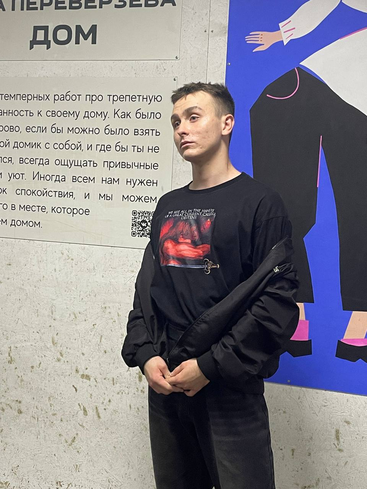
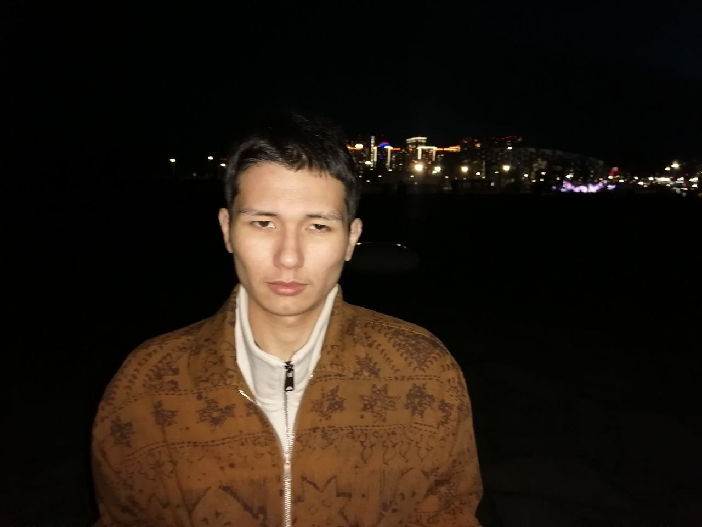
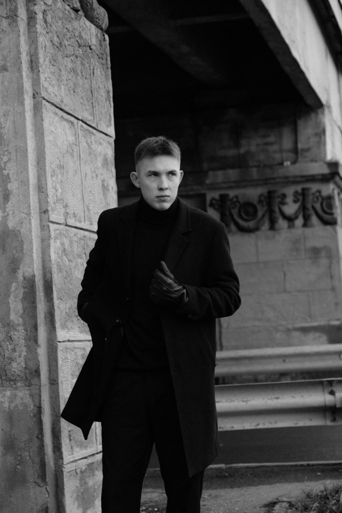

ЭТО КТОНАПИСАЛ? 01
ДАНЯ · СОЛО-КАРЬЕРА НА ПОЛНОЙ СТАВКЕ
Один в поле —
тоже компания.
Даня любит дрочить. Если бы правая рука начисляла бонусы, он бы уже обменял их на отпуск и попросил не беспокоить.
18+ · серьёзность вышла покурить
Три друга. Тема одна: почему взрослые люди говорят о чём угодно, кроме того, из-за чего у них краснеют уши.
Про девственность, онанизм, секс и неловкость — без гуру, экзаменационной комиссии и фразы «будь альфой», от которой хочется вызвать санитаров.
01 / КАСТ, А НЕ ЭКСПЕРТНЫЙ СОВЕТ
Общий чат, которому давно нужен модератор. Это дружеский roast. Если кто-то скажет, что всё было иначе, у нас есть кнопка «это был художественный вымысел».

ЭТО КТОДАНЯ · СОЛО-КАРЬЕРА НА ПОЛНОЙ СТАВКЕ
Даня любит дрочить. Если бы правая рука начисляла бонусы, он бы уже обменял их на отпуск и попросил не беспокоить.

ДАВАЙМАКС · ЯЗЫКОВОЙ СПЕЦНАЗ
Макс любит кунилингус. Его отдел качества принимает один KPI: партнёрше хорошо, а границы никто не трогает.

ВТОРОЙМАРК · РОМАНТИЧЕСКИЙ ОТДЕЛ
У Марка много женщин. Его календарь не синхронизируется — требует отдельный сервер, адвоката и выходной.
КОДЕКС ЭТОГО ЦИРКА
Можно быть смешным и не быть мудаком. Проверено на людях, которые читают до конца.
06 / ТИТРЫ. ПОЧТИ.
Можешь читать молча. Можешь закрыть вкладку и вернуться через пять минут. Мы не осудим. У нас нет доступа к твоей истории браузера. Наверное.
Я всё прочитал. И ничего не виделТушёный дрочёный — разговоры о сексе без понтов, паники и фальшивого опыта.
Сатирический проект 18+, не медицинский совет и не заменяет разговор с партнёром.